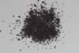

|
|
(For further information on spectroscopy, see:
http://speclab.cr.usgs.gov)
TITLE: Hematite GDS69 DESCRIPT
DOCUMENTATION_FORMAT: MINERAL
SAMPLE_ID: GDS69
MINERAL_TYPE: Oxide
MINERAL: Hematite (Hematite group)
FORMULA: alpha-Fe2O3
FORMULA_HTML: alpha-Fe2O3
COLLECTION_LOCALITY: Republic, Michigan
ORIGINAL_DONOR: Wards Natural Science Inc.
CURRENT_SAMPLE_LOCATION: USGS Denver Spectroscopy Laboratory
ULTIMATE_SAMPLE_LOCATION: USGS Denver Spectroscopy Laboratory
SAMPLE_DESCRIPTION:
Dimorphous with Maghemite.
This sample was wet sieved to the following grain size intervals for a study on grain size effects by Roger Clark. The sample was a single rock of specular hematite that appeared pure.
>250 microns
150-250 microns (a)
104-150 microns (b)
60-104 microns (c)
45-60 microns
30-45 microns (d)
20-30 microns (e)
10-20 microns (f)
less than 30 microns
less than 10 microns (g)
Letter denotes spectrum designation. Those without a letter were not measured.
IMAGE_OF_SAMPLE:

END_SAMPLE_DESCRIPTION.
XRD_ANALYSIS:
Comments: Using the quartz (101) and the anomalously intense (211) reflections as an internal standard for 2 theta, eleven hematite reflections were refined to obtain the cell dimensions a=5.035(1) and b0=13.750(4). Within the limits of error given above (1 sigma), these dimensions are those of pure Fe2O3 (see PDF2 33-0664).
END_XRD_ANALYSIS.
COMPOSITIONAL_ANALYSIS_TYPE: None # XRF, EM(WDS), ICP(Trace), WChem
COMPOSITION_TRACE:
COMPOSITION_DISCUSSION:
None.
END_COMPOSITION_DISCUSSION.
MICROSCOPIC_EXAMINATION:
Seven grain size intervals were examined:
| avg gr sz (µm) | comments | |
| 150-250microns | 233 | tr quartz |
| 104-150microns | 171 | lg grains prismatic |
| 60-104microns | 96 | 5 vol% quartz |
| 30-45 microns | 55 | 4-5 vol% quartz |
| 20-30 microns | 40 | 3 vol% quartz |
| 10-20 microns | 17 | trace quartz |
| <10 microns | 10.5 | trace quartz |
Anhedrally fractured grains, mostly specular, but occasionally massive surfaces. Some grains slightly attracted to magnet. Red color diagnostic of hematite. G. Swayze.
END_MICROSCOPIC_EXAMINATION.
SPECTROSCOPIC_DISCUSSION:
END_SPECTROSCOPIC_DISCUSSION.
SPECTRAL_PURITY: 1b2b3b4b # # 1= 0.2-3, 2= 1.5-6, 3= 6-25, 4= 20-150 microns
SPECTRAL_PURITY: 1b2b3b4_ # 60-104um # 1= 0.2-3, 2= 1.5-6, 3= 6-25, 4= 20-150 microns
SPECTRAL_PURITY: 1b2d3c4c # <10um # 1= 0.2-3, 2= 1.5-6, 3= 6-25, 4= 20-150 microns
| LIB_SPECTRA_HED: | where | Wave Range | Av_Rs_Pwr | Comment |
|---|---|---|---|---|
| LIB_SPECTRA: | splib04a r 2036 | 0.2-3.0µm | 200 | g.s.= 233µm |
| LIB_SPECTRA: | splib04a r 2047 | 0.2-3.0µm | 200 | g.s.= 171µm |
| LIB_SPECTRA: | splib04a r 2058 | 0.2-3.0µm | 200 | g.s.= 96µm |
| LIB_SPECTRA: | splib04a r 2069 | 0.2-3.0µm | 200 | g.s.= 55µm |
| LIB_SPECTRA: | splib04a r 2080 | 0.2-3.0µm | 200 | g.s.= 40µm |
| LIB_SPECTRA: | splib04a r 2091 | 0.2-3.0µm | 200 | g.s.= 17µm |
| LIB_SPECTRA: | splib04a r 2103 | 0.2-3.0µm | 200 | g.s.= 10.5µm |
| LIB_SPECTRA: | splib05a r 3182 | 0.2-3.0µm | 200 | g.s.= |
| LIB_SPECTRA: | splib05a r 3195 | 0.2-3.0µm | 200 | g.s.= |
| LIB_SPECTRA: | splib05a r 3208 | 0.2-3.0µm | 200 | g.s.= |
| LIB_SPECTRA: | splib05a r 3221 | 0.2-3.0µm | 200 | g.s.= |
| LIB_SPECTRA: | splib05a r 3234 | 0.2-3.0µm | 200 | g.s.= |
| LIB_SPECTRA: | splib05a r 3247 | 0.2-3.0µm | 200 | g.s.= |
| LIB_SPECTRA: | splib05a r 3261 | 0.2-3.0µm | 200 | g.s.= |
| LIB_SPECTRA: | splib06a r 9297 | g.s.= | ||
| LIB_SPECTRA: | splib06a r 9312 | g.s.= | ||
| LIB_SPECTRA: | splib06a r 9358 | g.s.= | ||
| LIB_SPECTRA: | splib06a r 9373 | g.s.= | ||
| LIB_SPECTRA: | splib06a r 9419 | g.s.= | ||
| LIB_SPECTRA: | splib06a r 9434 | g.s.= | ||
| LIB_SPECTRA: | splib06a r 9480 | g.s.= | ||
| LIB_SPECTRA: | splib06a r 9495 | g.s.= | ||
| LIB_SPECTRA: | splib06a r 9541 | g.s.= | ||
| LIB_SPECTRA: | splib06a r 9556 | g.s.= | ||
| LIB_SPECTRA: | splib06a r 9602 | g.s.= | ||
| LIB_SPECTRA: | splib06a r 9618 | g.s.= | ||
| LIB_SPECTRA: | splib06a r 9664 | g.s.= | ||
| LIB_SPECTRA: | splib06a r 9679 | g.s.= |
{kind=link}